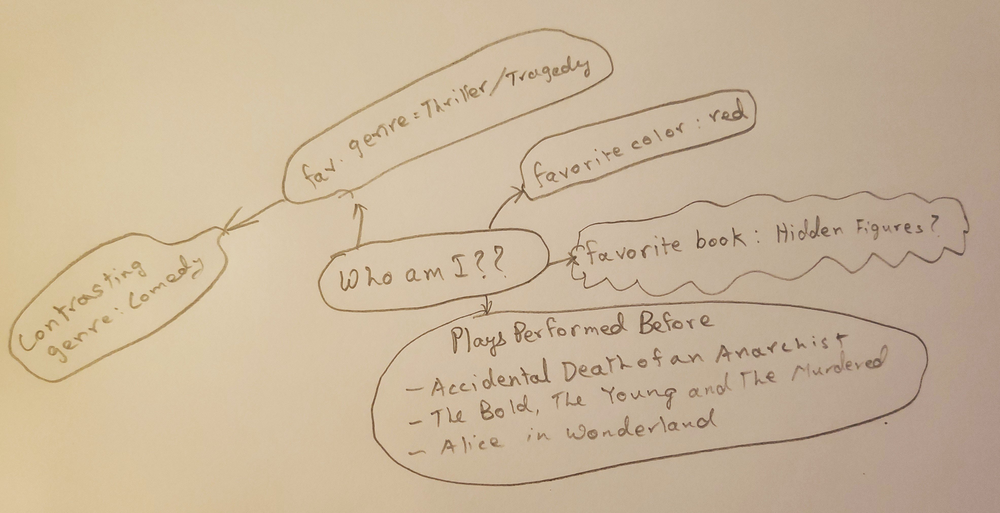
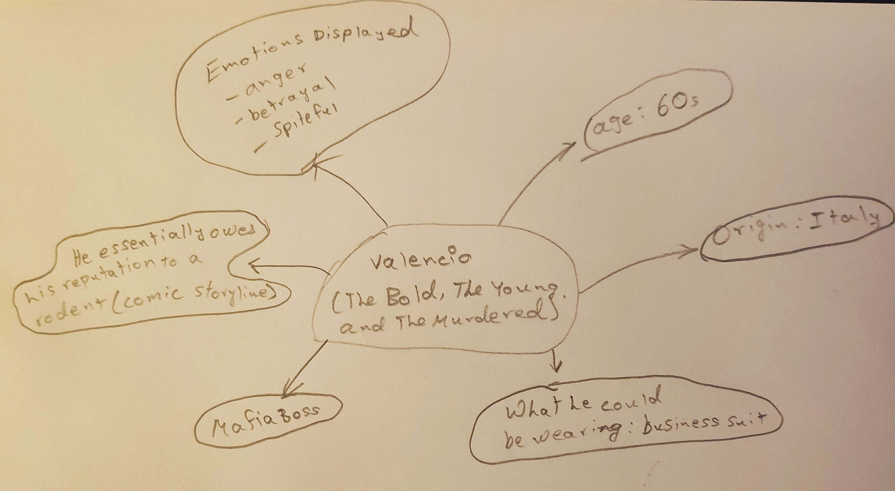
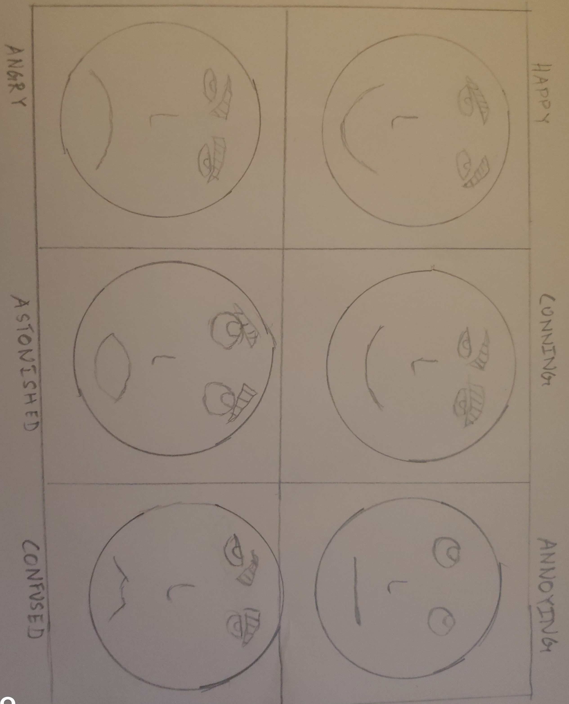
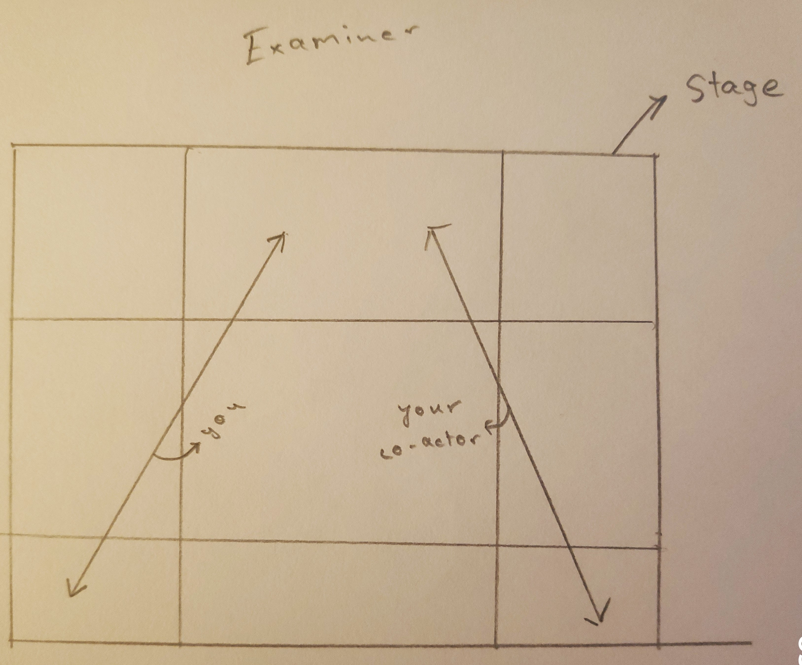
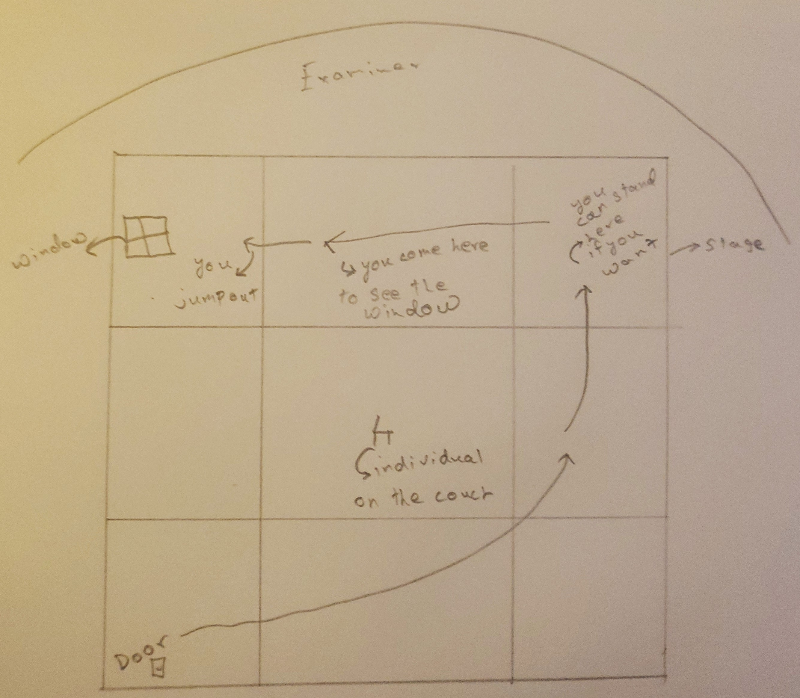

Trinity Acting Tips
Greetings, and welcome. We are extremely honored to have you referring to our tips and we hope you learn something from them.
Acting exams, in my opinion, are the hardest exams to take with Trinity College London, and they require a lot of practice to do well in. I’m speaking from experience when I say that, if you don’t prepare, you won’t get the results. I have received a distinction in every other Trinity Examination I’ve done except grade 8 acting, in which I received a merit, so pull up your socks!
In these tips, I will not be providing tips based on the grade, but I will be providing general tips which can be incorporated into your preparation.
Picking Your Pieces
Picking the pieces that you want to perform, is the most important part of the exam (in my opinion) and picking the wrong piece can lose you marks.
Don’t pick a piece based on its difficulty to perform, pick a piece that suits you
So how do you know if it suits you? You can only know if a particular piece suits you by exploring. You should spend at least four days exploring, and performing sample pieces. A great source to find your pieces is ‘
Trinity Anthology Online’
Some basic tips on selecting your pieces are below:
Before you even start to search your pieces, take a notebook and make a mind map on yourself, with your favorite color (optional), favorite book + it’s genre, a contrasting genre to your favorite book, and other things about yourself.

Next, go through as many pieces as you can and do the following:
- Read it in your head 2-3 times
- Try performing it, and see how you feel
- Shortlist it and move to other pieces
Now I don’t exactly know how to tell you if a piece suits you but I’ll tell you that there’s a particular feeling you get.
After you shortlist certain pieces, perform them in front of a friend, a teacher, or someone else and ask them if it suits you (you don’t need to memorize it, just read through it while acting)
I’ll explain what to do after shortlisting pieces in ‘performing’
The Different Types of Pieces
Trinity Acting exams require you to do different pieces in different grades so I’ll just summarize all of them:
1. Monologues: A monologue is like a speech, and is spoken by one character, often to express thoughts are talk to an audience. In Trinity Acting, certain grades require you to perform monologue and it’s slightly difficult considering you have to embody a character.
2. Play Extracts: These are basically excerpts from plays which you’re required to perform (I’ll dwell on this later)
Performing Your Pieces
NOTE: For higher grades, please make sure that all your pieces contrast with each other in terms of genre, etc. Read the syllabus for more.
Before you start performing, you have to analyze your piece, and I’ll tell you how to do that.
Once your pieces are shortlisted, you MUST read the whole play. For example, if you plan on enacting Act I, Scene iii, from the Merchant of Venice, it’s important that you read the entire play for better understanding. Furthermore, the examiner will most likely ask you about different scenes in the play.
Now, when reading the piece, note down the following:
- Theme: A central value or idea
- Genre: for Example, thriller, romance, etc.
- The name of the character
Character Sketch
The next important thing you should do is a character sketch. What is it?
Some of you may not get this, but it’s worth a shot. Have you ever seen a meme ‘Have you ever wondered what’s going on inside his head?’ That meme is exactly what you need to do in a character sketch.
A character sketch in this case is essentially analyzing everything about the character you’re impersonating. This ranges from physical features, the what he/she wears, to how he/she talks.
For my acting grade 8, I took pieces from the Merchant of Venice, The Man who Married a Dumb Wife, and The Bold, The Young, and the Murdered. I’ll give you an example of a character sketch with these.

A character sketch is extremely important when understanding how to act out a piece because it guides you and gives you direction.
After this, memorize your pieces. I suggest not going line by line. Once you keep reading your pieces again and again, they will instantly come to you.
Practice, Practice, Practice!
The next step is practicing, and essentially the most important part. I suggest that everyday, you do one practice round in front of the mirror, with all pieces.
As for improvisations, you can practice with your coach, or friend. I’ll explain what an improvisation is later.
In terms of understanding your character, you should spend a lot of time understanding the background of the play. You can also watch YouTube videos of someone performing your piece and understand how it’s acted out.
Other than that, there really isn’t anything else I can say for practicing. You should spend at least 30 hours preparing for your exam if you’re going for a grade 8.
The Discussion
The discussion is one of the most important parts of the acting exam, and it’s important that you nail this. I’ll tell you how to do that.
The examiner will be asking you questions on a lot of things, ranging from your pieces, to different techniques.
1. Your Pieces
YOU HAVE TO KNOW YOUR PIECES, and there’s no better way to do that than to read the whole play. Once you read the play, you’ll understand the plot, the characters, and the settings.
The examiner may ask you all of these. For example, if you’re performing a character from one particular scene, the examiner may ask you about the actions of your character from another scene of the play.
The examiner may also ask you the setting, which is essentially where and when the play is set, for example in Merchant of Venice, your settings would be renaissance Venice.
Apart from that, you may be asked to contrast all your pieces in terms of genres.
One more important thing that the examiner may ask, is how you chose your pieces. You can say that you went through various plays, drafted character sketches, and made a mind map on yourself. Therefore, you picked the pieces that you found the most interesting, and would have fun performing. You can also contrast certain plays with each other, and then state what was unique about the excerpt you picked to perform.
2. Vocal Techniques
These are different elements that are used in performance to make it more interesting and engaging. The examiner WILL ask which vocal techniques you have used in your pieces and you should follow this format: Technique>definition>example>why you used this
For example: I used various vocal techniques to make my performance more engaging, and interesting. One vocal technique that I used was accent. An accent is the way a person or a group of people pronounces words. I used this in my third piece, to impersonate Shylock to the fullest extent. Since Shylock was from Italy, and was an old man, I used an accent based on that.
Few examples of vocal techniques are:
a. Pitch: The vibration of your vocal chords
b. Pace: The speed at which you speak can determine your tone and can create suspense.
c. Pause: Pause is when you basically ‘pause’. You can pause before saying something to create suspense.
d. Tone: Your tone is the emotion you want to express. You can do this by changing your pitch, pace, or volume. Facial expressions can also be used.
e. Volume: How loud or soft you speak
f. Emphasis: When you stress on something. In acting, you do this with the way you say a word. For example if you want to stress the word ‘he’, you could raise your voice. You can also incorporate emphasis with facial expressions.
g. Articulation: Articulation is the formation of clear and distinct sounds. In terms of acting, you need to make sure that the audience understands everything you say and you therefore need to be articulate.
For more, visit https://www.bbc.co.uk/bitesize/guides/zqtgq6f/revision/2
3. Physical Techniques
I don’t really know what to put here so I’ll give examples:
a. Posture: The way you stand. For example, of you’re playing Shylock from the Merchant of Venice your position would be slightly hunched.
b. Hand Movements: If your character is very expressive, you may use a lot of hand movement. Your hand movements can also determine your tone. If you’re angry your fists will be clenched
c. Movement: The way you move around the stage (explained later)
d. Body Language: Everything, ranging from hand movements, to the way you stand (basically a general definition)
e. Facial Expressions: Ill try making a diagram, but it’s not professional

So I actually wanted to have fun and ended drawing this, and I thought it could help you!
The examiner may also ask about vocal exercises so try researching upon them.
Piece Modifications
A piece modification is like an improvisation so let me explain that first. An improvisation is basically an ‘on the spot’ performance. What I mean by this is that the examiner will give you a stimulus eg. You saw your friend at a mall, but don’t want him to see you.
You will given 60 seconds to think about this and then you’ll have to act it out for 2-3 minutes. In acting, you’ll be performing your pieces, and the examiner will give you a situation on one of your pieces.
For example, suppose the tone of one your pieces is sadness, the examiner may ask you to enact the same piece but in a happy tone.
This is why you should practice a lot, because you’ll understand your piece and will be able to perform it better.
Using a Co-Actor (Applicable to Higher Grades)
A co actor is someone who will enter the room with you and act alongside you. In some pieces that you may perform, you may occasionally have another character who needs to respond to you. That’s where a co-actor comes in. Make sure your co-actor has Trinity Acting experience and is serious, as you can also lose marks elsewise.
When using a co-actor, you must be careful when it comes to stage movement. You don’t want the examiner’s attention to shift. Therefore the best option is to move forward and backwards.
When your co-actor needs to speak, he/she can move forward, and when you need to speak, your co-actor should move back, and you forward.
NEVER SHOW YOUR BACK TOWARDS THE AUDIENCE

Let me explain this diagram:
You have the stage, and you and your co-actor stand opposite each other. The arrow marking symbolize your movements. When you speak, you can move towards the audience and then move back.
The reason I have drawn these markings diagonally is so when you move back, you’re still partially facing the audience. However, the way you use the stage is your decision.
Using Space
In acting, the examiner is not your only audience member. You need to imagine that there’s an audience behind and around the examiner and it’s therefore important that you utilize space.

This is ideally how a stage is divided and you can use it to your advantage. For example, if your scene requires you to enter through a door, you can keep the door as left upstage and once you enter, you can come to center downstage. This shows that you are effectively using stage space.
Let me show you another diagram. Suppose your setting is a house, and you’re required to enter, and then talk to an individual sitting in the house, and then you need to jump out of a window (this is for demonstration purposes). I would put the setting as this:

The arrow markings, show your potential movement when acting but again, you can use the stage however you want. Also take a look at the audience location and base your performance on that.
What to Wear
You should look your best for your exam, and I would suggest wearing something formal.
Costumes
You can’t act without costumes can you now? It doesn’t have to be so elaborate but wearing something different for every piece allows you to impersonate your character better. For example, in one of my pieces, I played Shylock from the Merchant of Venice. Although I came in formals, I wrapped a scarf around myself to be more like my character.
You don’t want to spend so much time changing your costumes, however, so keep it simple.
Descriptions of Your Pieces
This is extremely important as it makes it easy for the examiner to check how your pieces contrast. An example of this is what I did (although I don’t know if it’s good):
1. Introduce all three plays
“Good Morning, the three contrasting monologues that I will be performing today are from the plays ‘The man who married a dumb wife, The Bold, The Young, and The Murdered, and The Merchant of Venice.”
2. Introduce the first play, time period, scene, character being played
The first monologue that I will be performing is taken from the play “The Bold, The Young, and The Murdered” by Don Zolidis. This play was written in the 21st century. In this scene, I will be playing the character of Valencio who himself is acting in a theatre and he is explaining his life story to another co-actor in a play called Jessica. He will be talking about his life when he was young and how he became older and joined the mafia. Valencio is a character with conflicting beliefs and he owes his reputation to a rodent but is not sure whether or not he should be proud of it or not so it is a reflective piece.
3. Act it out
4. Introduce the second play, time period, Character being played and how does it contrast with the first play (Theme, setting, character).
The second monologue that I will be performing is taken from the play “The man who married a dumb wife” by Anatole France. This play was written in the 20th century. In this particular scene, Leonard is complaining about how his wife is dumb and he is explaining it to a lawyer. He keeps complaining but when the lawyer tells him that his wife can be cured, his tone completely changes and he becomes optimistic. This piece contrasts from the previous as this time, Leonard is a self-obsessed and an insensitive character compared to Valencio, who is a conflicted character.
5. Act it out
6. Introduce the third play; contrast it with first and second plays/monologues, time period, setting, characters being played.
The third monologue that I will be performing is taken from the play ‘Merchant of Venice’ by William Shakespeare. This play was written in the 16th century. In this scene, I will be playing Shylock who is a conniving Jew, and I will be talking to Bassanio about Antonio being bound. This scene portrays Shylock’s hatred of Antonio and it puts him into the role of an opportunist as he finally gets to take revenge on Antonio. This monologue differs from the rest as Shylock is a very spiteful character and he is an excellent actor. The time periods also differ with merchant of Venice being written in the 16th Century. The themes of the monologue are different with Valencio’s being horror, Leonard’s being selfishness, and Shylock’s being conniving.
^^The format comes from my wonderful Trinity coach, so I suggest you follow this.
Mime
Although mime isn’t part of higher-grade exams, it’s an integral part of your acting. When acting it’s extremely important that what you imagine in your head, is the same as what the examiner imagines, and that’s where mime comes in.
Mime is (someone fact check this definition for me and tell me) performing using only body language and gestures.
Now in mime you’re not actually allowed to speak but everything else you do in your exam resembles it. Let me give you an example. Suppose part of your performance involves pouring a cup of coffee. You wont actually get a coffee jar, and pour coffee would you?
Instead, you would use your body language and gestures.
Now I can’t explain this any further so I suggest you ask your coach or watch some tutorials
The Day of the Exam
I’m just going to summarize what you should have on exam day:
- Your school ID Card
- Your exam ticket (unless your coach has it)
- Carry hard copies of your pieces, so you can revise before entering
- Have a water bottle, and take a sip of water before entering
- Your props
- Your co-actor
What NOT to do on the Day of The Exam
- Do not arrive just before the exam
- Do not forget your props
- Do not ask the examiner questions like ‘how did I do’, or ‘how much did I get’
- Don’t take a seat near the examiner unless he/she asks you to
Conclusion
So, this is your beginner guide to Trinity Acting, and we really hoped that it helped you. If it has helped you, you can help us by giving feedback so we can continuously improve this guide. We appreciate your support, and are delighted to see you’ve read the whole guide.